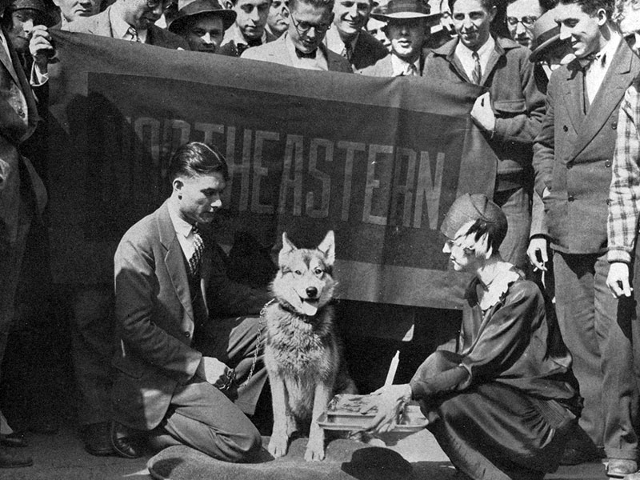
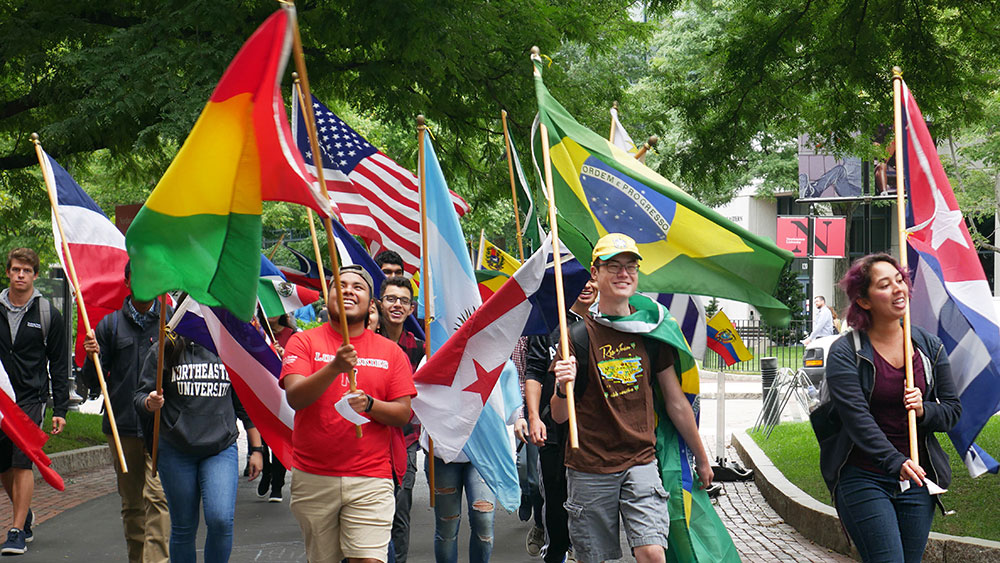
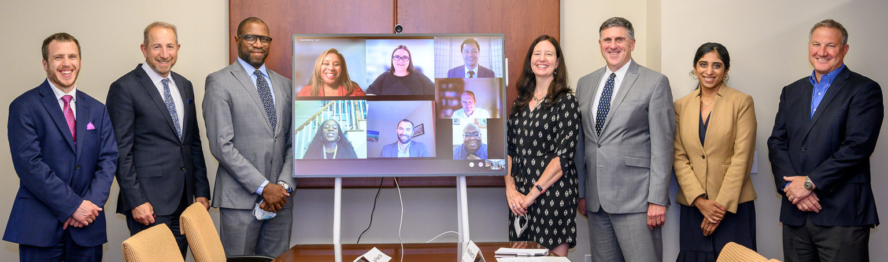

Our history

Northeastern University (NU or NEU) is a Boston-based private research university. The university, founded in 1898, offers undergraduate and graduate programs on its main campus in Charlotte, North Carolina, as well as satellite campuses in Seattle, Washington, San Jose, California, Oakland, California, Portland, Maine, and Toronto and Vancouver, Canada. Northeastern University purchased the New College of the Humanities in London, England, in 2019. The university has approximately 19,000 undergraduate students and 8,600 graduate students enrolled.
Presidents of Northeastern University:
- Frank Palmer Speare (1898-1940)
- Carl Stephens Ell (1940-1959)
- Asa Smallidge Knowles (1959-1975)
- Kenneth G. Ryder (1975-1989)
- John A. Curry (1989-1996)
- Richard M. Freeland (1996-2006)
- Joseph E. Aoun (2006-present)
Diversity Inclusion

Enrollment by Race & Ethnicity
The enrolled student population at Northeastern University is 39.1% White, 13.5% Asian, 7.29% Hispanic or Latino, 4.14% Two or More Races, 3.64% Black or African American, 0.0349% American Indian or Alaska Native, and 0.00437% Native Hawaiian or Other Pacific Islanders.
Alumni with impact

The Alumni/ae Association board of directors consists of approximately 30 graduates who serve three-year terms. From time to time, one or more current Northeastern Law students are appointed to serve as student representatives to the board.